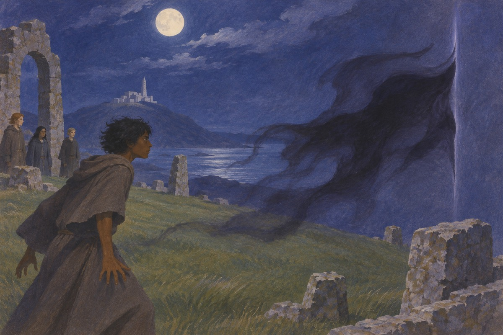
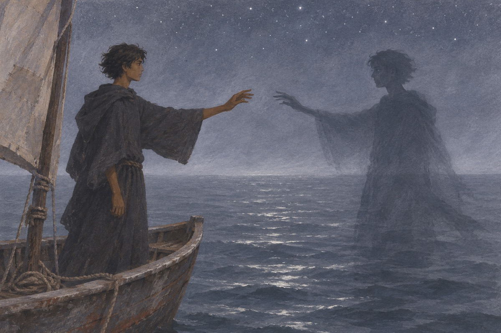
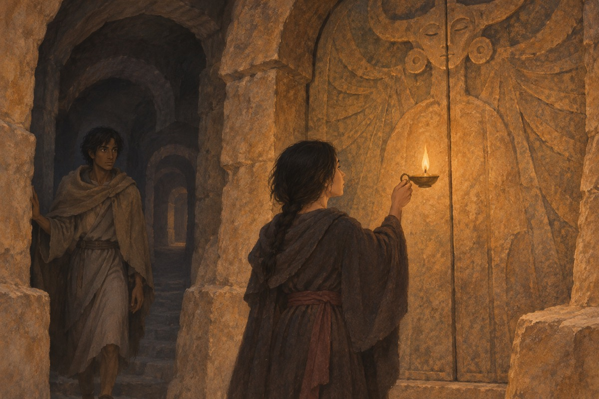
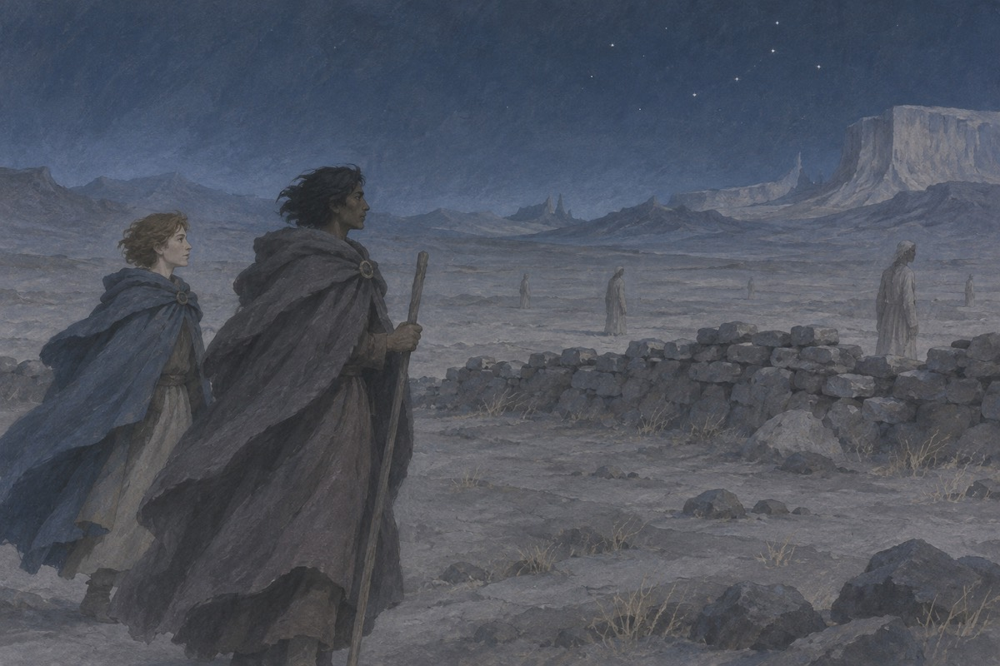
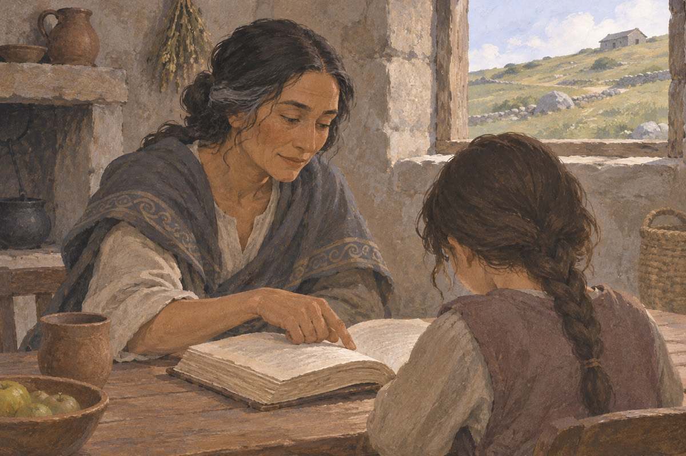

雾中的村庄
格得出生在贡特岛十桤村，幼名杜尼，父亲以打铁为生。他从做女巫的姨母那里学会小法术。卡耳格人来袭时，他召来浓雾遮蔽村庄，让村民有机会抵御袭击。这次施法几乎耗尽了他的力量，也让贡特的巫师欧吉安注意到他。
出处 · 《地海巫师》第1章〈雾中的战士〉

欧吉安与真名
欧吉安依照命名仪式为杜尼授予真名格得，并带他在贡特修行。格得急于学习改变事物的法术，欧吉安先要求他观察事物本身，理解施法会带来的后果。师徒步调不同，欧吉安让他在留在身边和前往柔克学习之间选择，格得选了后者。
出处 · 《地海巫师》第1–2章
放出影子
在柔克的较量中，格得受不了贾斯伯的挑衅，试图召出死者伊尔法兰的灵魂。生死之间裂开一道缝，影子从中出来，抓伤格得的脸。大法师奈莫尔耗尽力量封住裂口，救下格得后不久去世。格得留下伤疤，也从此必须面对自己放出的东西。
出处 · 《地海巫师》第4章〈释放影子〉

从逃亡到追踪
格得一度想远离柔克和影子，先在九十群岛任职，后来又到欧司可岛。几次遭遇让他无处可躲，他变成鹰才逃回贡特。欧吉安替他解除变形，劝他转过来追踪影子。格得重新出海，第一次主动寻找此前一直在追他的东西。
出处 · 《地海巫师》第5–8章
格得说出自己的名字
费彻陪格得驶向东陲以外的海域。到了两人分开的那一刻，格得走向影子，并说出自己的真名；影子也说出同一个名字。他接纳了自己放出的那一部分，终于能摆脱追逃。费彻把格得救回船上。
出处 · 《地海巫师》第9–10章

阿图安的地底迷宫
泰娜幼年被带到阿图安陵墓，取去名字，以阿尔哈的身份侍奉无名者。格得潜入迷宫寻找厄瑞亚拜之环缺失的一半，被她发现并困在地下。泰娜先掌握着格得的生死，随后开始怀疑祭司教给她的秩序，重新听到并承认了自己的名字。
出处 · 《阿图安的陵墓》第1、5–8章

带着和平之环出走
泰娜选择帮助格得离开迷宫。无名者试图把两人困在坍塌的地下，他们互相扶持着脱险，带走重新合拢的厄瑞亚拜之环。到了黑弗诺，众人迎接带回和平之环的泰娜；她往后如何生活，是离开陵墓后才有权作出的选择。
出处 · 《阿图安的陵墓》第9–12章
亚刃来到柔克
恩拉德的年轻王子亚刃来到柔克，带来北部法术衰退的消息。大法师格得判断这并非单一岛屿的异变，带他出海查找缘由。沿途的见闻逐渐把海上的混乱和一种拒绝死亡的诱惑联系起来。
出处 · 《地海彼岸》第1–4章
走入旱域
格得找到试图以法术逃避死亡的法师库伯。他打开生与死之间的通道，活人的魔法也随之衰微。格得与亚刃进入死者所在的旱域寻找库伯，必须先封住这道裂口，才能恢复地海世界的秩序。
出处 · 《地海彼岸》〈旱域〉

封闭生死的裂口
在死者之地，格得直面失去视力的库伯，耗尽自己的法力，封上对方撕开的裂口。年轻的亚刃没有独自逃生，他搀扶力竭的格得，翻越旱域的山脉寻找回到活人世界的道路。
出处 · 《地海彼岸》〈旱域〉、〈苦痛之石〉
莱班南继位
亚刃带格得返回生者世界，古龙卡雷辛帮助他们离开赛力多。亚刃以真名莱班南登基，成为地海长期缺位的国王；格得从大法师的位置退下。两人的远行既封闭了通向亡者世界的裂口，也让年轻的继承人应验了归来的王者预言。
出处 · 《地海彼岸》〈赛力多〉及尾声
泰娜收留瑟鲁
遭虐待和烧伤的幼女被救下后，泰娜收留了她，并照料她留下的伤痕。孩子以瑟鲁之名生活，身世在这一阶段依旧难以解释。泰娜带她去见病危的欧吉安；欧吉安让泰娜好好教养她，为卷末孩子显露的身份留下线索。
出处 · 《地海孤雏》〈一个坏东西〉、〈欧吉安〉

龙将格得带回贡特
库伯的裂口封闭后，格得已经失去法力。古龙卡雷辛将他带到贡特，交给刚送走欧吉安的泰娜照料。回到故乡的格得必须接受普通人的生活，也暂时难以面对熟知其大法师身份的人。
出处 · 《地海孤雏》〈卡雷辛〉、〈麻鹰〉
泰娜与格得重聚
格得在贡特恢复期间避开旧日身份所带来的期待，一度离开泰娜身边，去做牧人。此后两人在贡特重新相聚。失去法力的格得和曾被陵墓夺走名字的泰娜，在各自脱离旧身份以后建立了新的亲密关系。
出处 · 《地海孤雏》〈麻鹰〉及后半部
瑟鲁唤来卡雷辛
法师阿斯彭逼迫泰娜与格得走向险崖。瑟鲁向大海呼唤古龙卡雷辛，古龙前来救下两人，并以泰哈努唤她，承认她与龙族的联系。第四部就此收束，泰娜、格得和瑟鲁都活着留在贡特。
出处 · 《地海孤雏》末章〈泰哈努〉